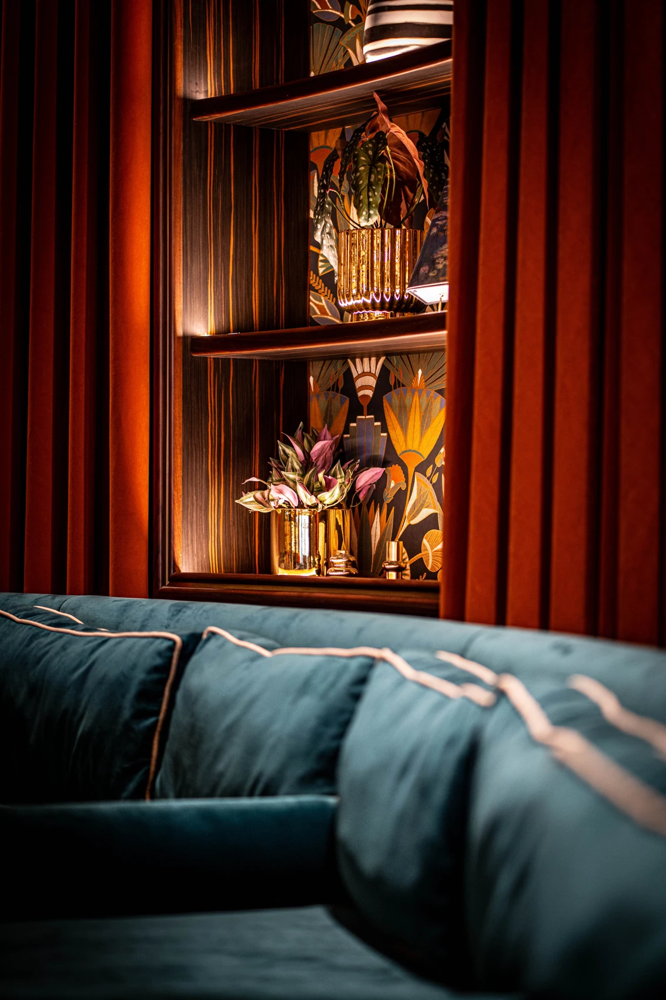
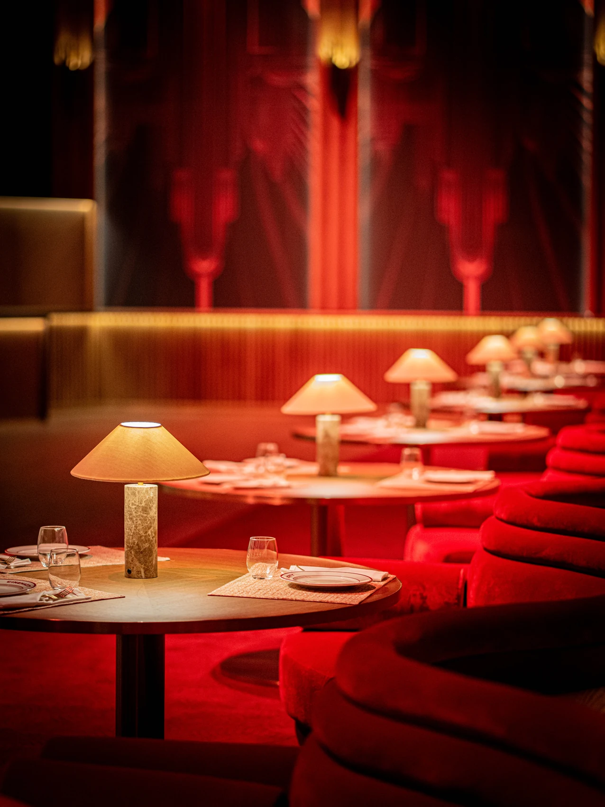
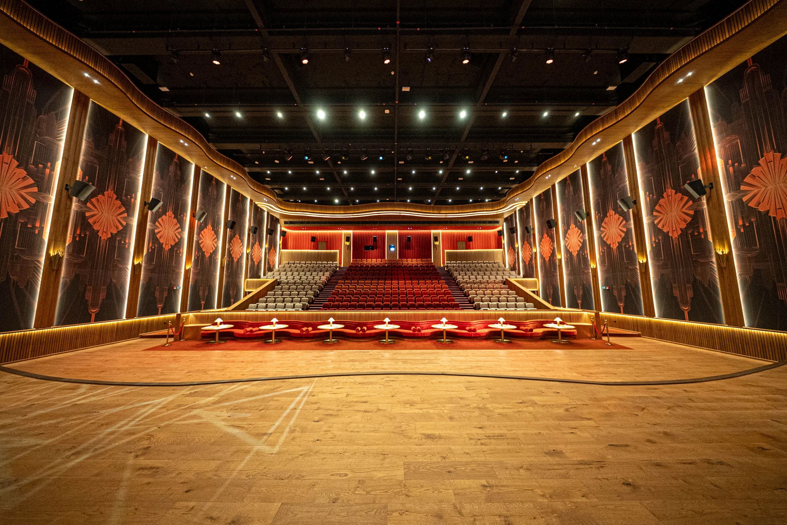
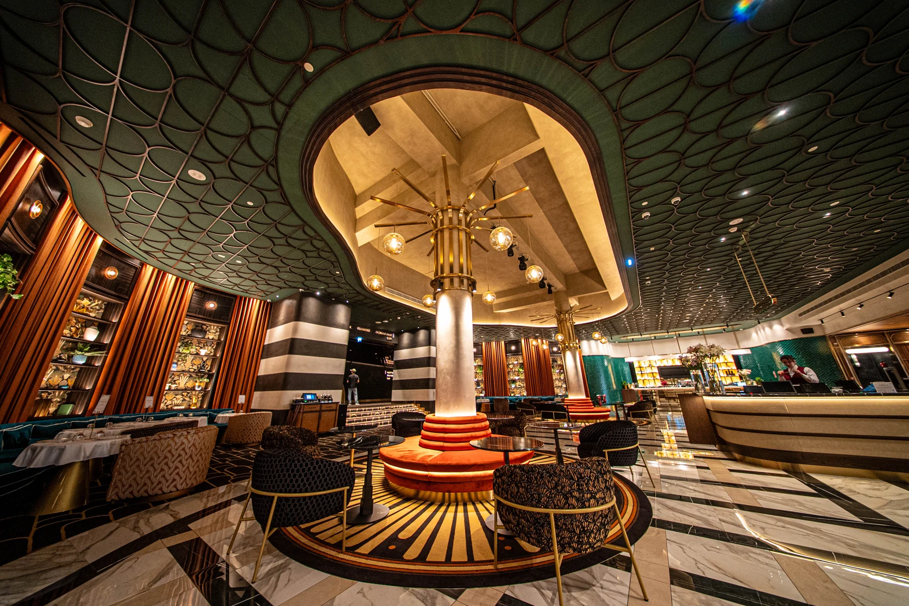
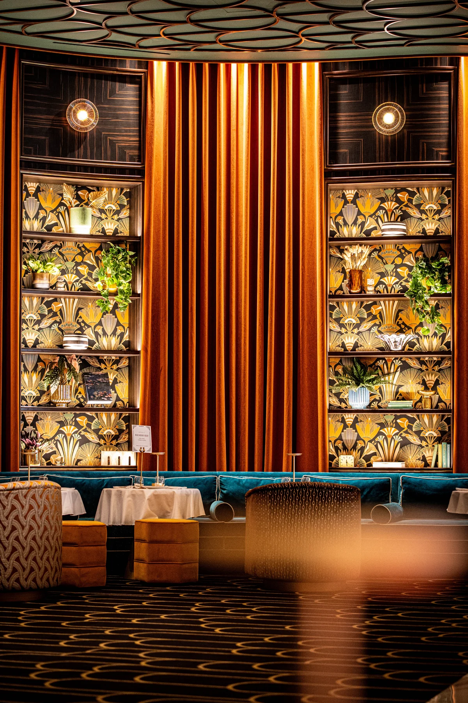
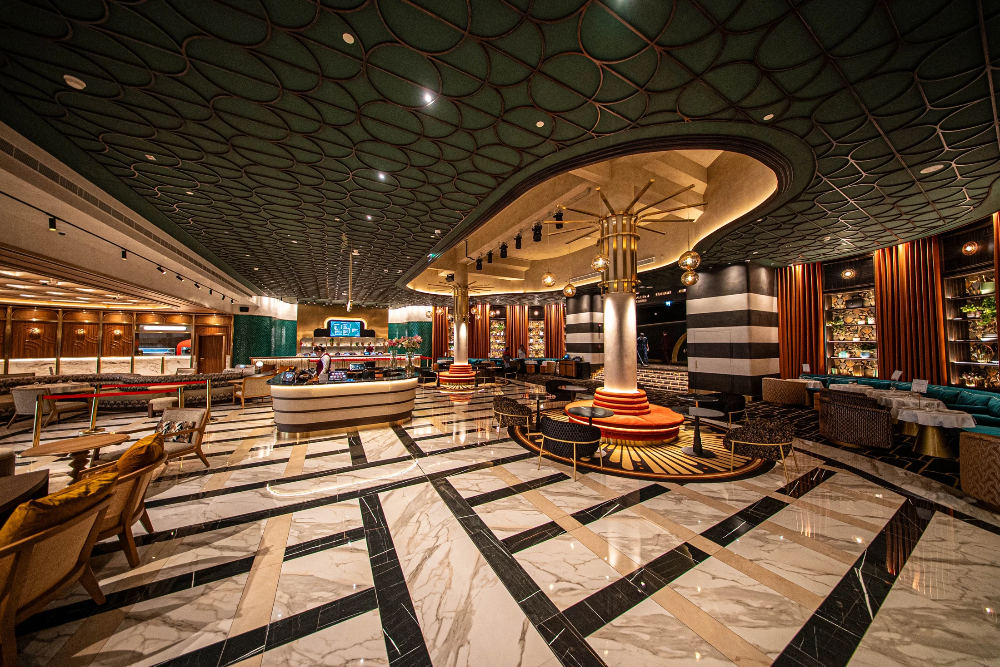
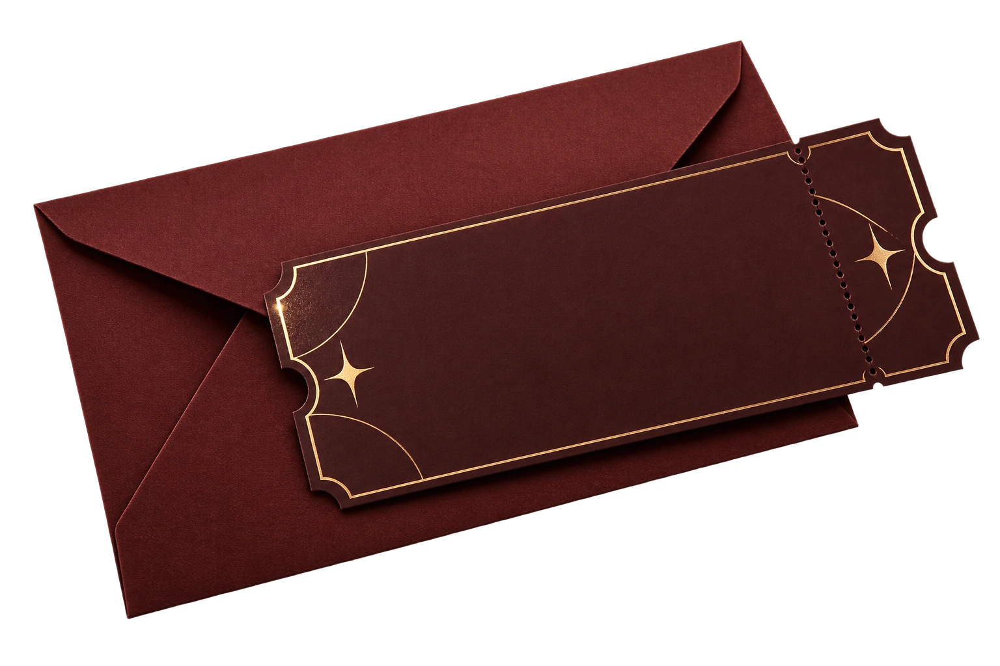

More than
a moment.
An entertainment and cultural house where film, music, performance, dining and hospitality come together.
Cultural literacy. Craftsmanship.
Hospitality. Belonging.
Identity, experience & expression






Type something. Let the words carry the feeling.



An evening, well spent.
A brighter kind of cinema.
A world, considered in every detail.
An entertainment and cultural house where film, music, performance, dining and hospitality come together.
Cultural literacy. Craftsmanship.
Hospitality. Belonging.
The wordmark leads. The emblem adds a quieter, recognisable detail. Always use the original artwork.
Burgundy anchors the identity. Gold brings light. Onyx and Olive add depth, used with restraint.
Fine serifs give the headlines expression. A quiet sans serif keeps information clear.
One dominant headline.
A calm reading rhythm.
Preserve geometry. Let composition and light guide attention. Show texture, craft and quiet gestures of care.
A consistent signature, from the first invitation to the last impression.
Applications are design concepts.